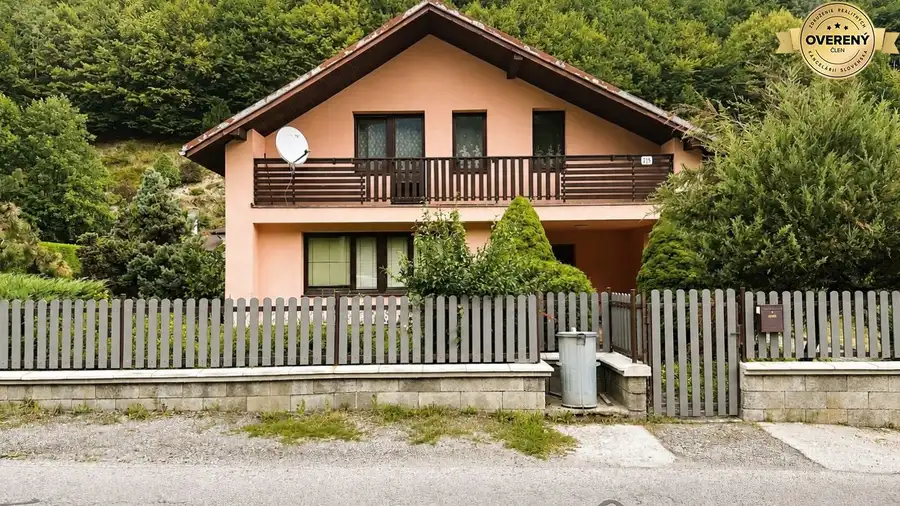
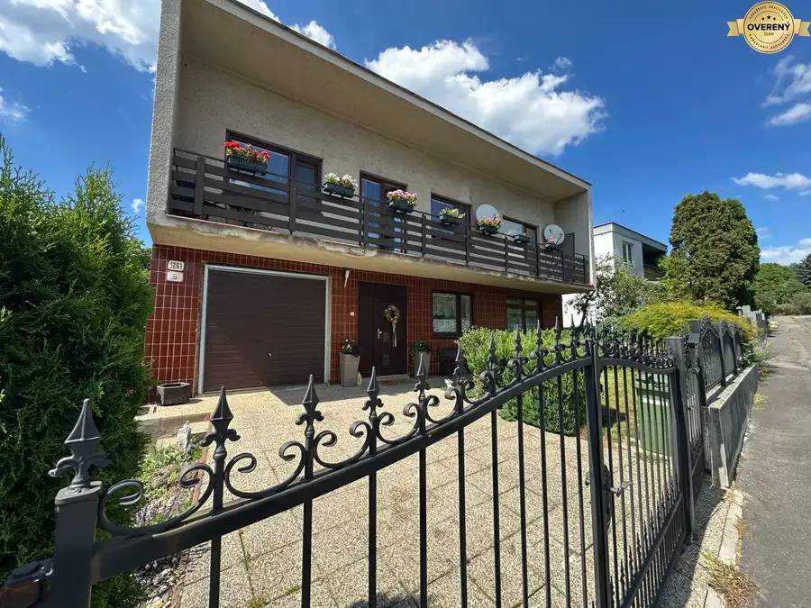
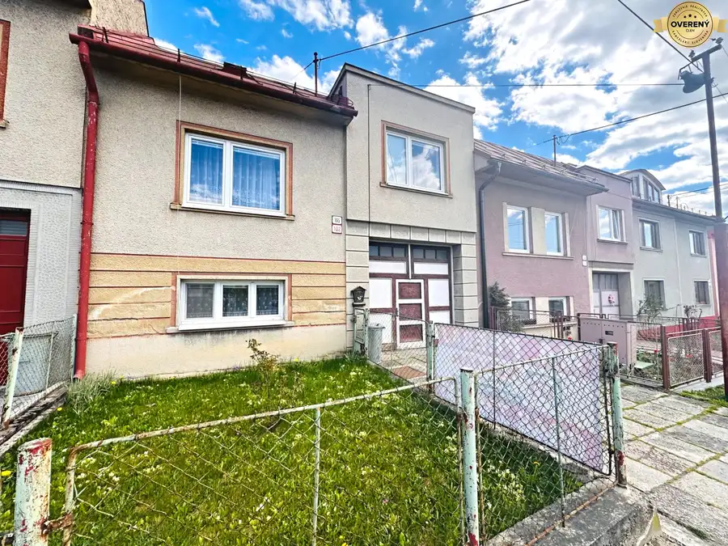

Rodinný dom na Fončorde, Banská Bystrica
Banská Bystrica
- Dispozícia5-izbový
- Plocha205 m²
- Poschodie0. z 3
- Stavpôvodný
O nehnuteľnosti
Nehnuteľnosť zaujme kombináciou troch podlaží, veľkého stavebného pozemku s výmerou 805 m² a možnosťou výstavby ďalšieho rodinného domu na pozemku.
Veľkou výhodou je aj samotné umiestnenie – ide o posledný rodinný dom na konci slepej ulice, čo prináša väčšie súkromie, pokoj a minimum prejazdu áut.
Rodinný dom je riešený ako 5-izbový, pričom jeho dispozícia a veľkorysý vnútorný priestor umožňujú jednoduchú úpravu na plnohodnotný 6-izbový, prípadne aj väčší rodinný dom.
Vďaka trom podlažiam ponúka nehnuteľnosť množstvo možností budúceho využitia a prispôsobenia podľa potrieb nového majiteľa.
Viac informácií, fotografií a vizualizácií môžete vidieť tu:
https://kovalikreality.sk/rodinny-dom-na-foncorde
Základné informácie:
- tehlový rodinný dom
- rok výstavby: cca.1978
- aktuálne 5 izieb
- možnosť jednoduchej úpravy na 6 a viac izieb
- 3 podlažia
- podlahová plocha približne 205 m²
- veľká garáž
- pozemok 805 m²
- možnosť výstavby ďalšieho rodinného domu na pozemku
- Banská Bystrica – Fončorda, Bagarova ulica
- posledný dom na konci slepej ulice
- pokojné prostredie a väčšie súkromie
- výborná dostupnosť do centra mesta
Pozemok poskytuje možnosť výstavby ďalšieho rodinného domu, čo výrazne rozširuje potenciál celej nehnuteľnosti.
Nový majiteľ tak môže nehnuteľnosť využiť na komfortné rodinné bývanie s veľkou záhradou, viacgeneračné bývanie, prípadne využiť časť pozemku na výstavbu ďalšieho rodinného domu.
Bagarova ulica ponúka atraktívnu kombináciu pokojného bývania a výbornej dostupnosti do mesta. Zároveň zostáva zachovaná veľmi dobrá dostupnosť do centra Banskej Bystrice a k občianskej vybavenosti Fončordy.
Predstavte si svoj nový domov.
V galérii nájdete vizualizácie možnej rekonštrukcie, ktoré vám ukážu, aký potenciál tento rodinný dom ponúka. Nechajte sa inšpirovať a objavte, ako môže vyzerať váš budúci domov.
Zaujala vás táto nehnuteľnosť?
Radi vám poskytneme viac informácií. Obhliadky budú možné od 15.9.2026. Kontaktujte nás ešte dnes.
Kovalík Reality & Znalectvo
Miesto, kde sa z nehnuteľností stávajú domovy.
Parametre
| Rozloha pozemku | 805 m² |
|---|---|
| Zastavaná plocha | 156 m² |
| Úžitková plocha | 205 m² |
| Poschodie | prízemie |
| Počet poschodí | 3 |
| Počet izieb | 5 |
| Stav | pôvodný |
| Odvoz odpadu | áno - separovaný |
| Voda | verejný vodovod |
| El. napätie | 230/400V |
| Plyn | áno |
| Kanalizácia | áno |
| Internet | telefónna linka |
| Kúpeľňa | áno |
| Vykurovanie | spoločné – vlastná kotolňa |
| Balkón | áno - 1 |
| Pivnica | áno |
| Garáž | áno - 1 auto |
| Inžinierske siete | áno |
| Zateplený objekt | nie |
| Energetický certifikát | nie |
| Predzáhradka | áno - 1 |
| Okná | drevené |
| Terén | mierny svah |
| Prístupová cesta | asfaltová cesta |
| Dátum zverejnenia | 11. 9. 2026 |
Kde to je
Mohlo by Vás zaujímať

Rodinné domy10 390 000 €Rodinný dom v obci Tajov 5 minút od Banskej Bystrice Tajov 6-izbový260 m² Hľadáte dom, ktorý si môžete pretvoriť podľa vlastných predstáv a zároveň bývať na mieste, kde sa spája pokoj, zeleň a výborná dostupnosť? Práve ste…
Rodinné domy10 450 000 €6- izbový rodinný dom, Karlovo, Banská Bystrica, pozemok 692 m2 Banská Bystrica 6-izbový220 m² Pokojné bývanie v jednej z najvyhľadávanejších lokalít Banskej Bystrice. Hľadáte dom, ktorý si môžete pretvoriť podľa vlastných predstáv a zároveň…
Rodinné domy10 199 000 €SUPER CENA: 6 izbový rodinný dom v Selciach pri Banskej Bystrici Selce 6-izbový193 m² Priestranný rodinný dom s veľkým pozemkom, samostatnou bytovou jednotkou a obrovským potenciálom na moderné bývanie alebo spojenie bývania s…